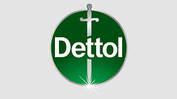
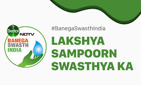
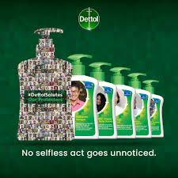

How India's most trusted hygiene brand built emotional connection and social impact — turning products into purpose and trust into market leadership.

Dettol doesn't sell soap and disinfectants. It sells trust, safety, and care for families. This fundamental positioning has made it India's most trusted hygiene brand for decades.
The brand's marketing genius lies in its ability to transcend product categories and build campaigns that create emotional connection, social impact, and long-term market leadership.
This case study analyzes two landmark campaigns: Banega Swasth India — a social movement that redefined brand purpose — and #DettolSalutes — emotional storytelling that captured hearts during crisis.
The genius of this campaign was its expansion of Dettol's core promise — protection from germs — into a national health movement. Instead of product ads, Dettol created awareness about hygiene habits across urban and rural India.
Targeting households, schools, and communities, the campaign built an ecosystem of TV programs, school activities, digital content, and public events. This wasn't advertising — it was education at scale.
"When your campaign solves a real human problem, your brand becomes unforgettable. Dettol didn't sell soap — it sold better health for India."
The funnel was masterfully designed: mass media for awareness → school/community programs for education → natural product trust for purchase decisions. This created habit-based brand recall that competitors couldn't match.

During the pandemic, Dettol executed one of the most brilliant emotional campaigns: replacing product logos with images of frontline workers. The packaging itself became a storytelling medium.
This wasn't product promotion — it was human recognition. Real heroes on soap packs created instant emotional connection, social media shareability, and earned media at scale.
"People remember how you made them feel, not what you sold. #DettolSalutes proved emotional resonance builds stronger brand loyalty than any product claim."
The campaign expanded across social media, influencers, digital experiences, and retail. It connected perfectly with the emotional state of a fearful market, positioning Dettol as the empathetic protector brand.

Banega Swasth India solved real hygiene problems through education, making Dettol the natural purchase choice without direct selling.
#DettolSalutes turned product packs into emotional storytelling devices, creating free media through every purchase.
TV + schools + digital + events created reinforcement across touchpoints, building habits stronger than single-channel advertising.
During crisis, emotional recognition built deeper loyalty than product benefits or discounts ever could.
Educational campaigns create automatic purchase consideration — consumers buy Dettol because it's always been the trusted choice.
Thinking beyond products to national health created cultural relevance and unmatched market positioning.
Dettol proves that purpose-driven marketing creates unbreakable trust. Banega Swasth India built rational trust through education. #DettolSalutes built emotional trust through empathy.
Both campaigns show the same principle: great brands solve problems and create feelings before they sell products. This sequence — purpose → emotion → trust → purchase — is marketing's most powerful formula.
For any brand, the lesson is clear: align your marketing with real human needs, execute with emotional intelligence, and build campaigns that become cultural moments.
At Brand Business Talk, we help brands with research, strategy, market insights, and growth recommendations. Let's build your brand growth strategy together.